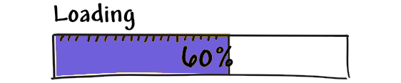
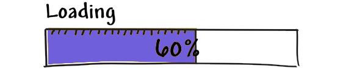
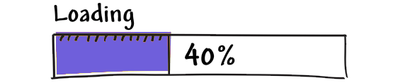
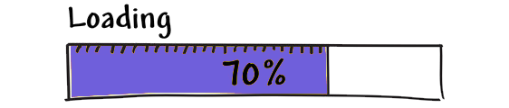

Thông tin
Họ và tên: Trương Việt Hoàn
Sinh ngày: 28/04/2002
Giới tính: Nam
Học vấn
Đôi nét về Trương Việt Hoàn:
Trương Việt Hoàn là một thần đồng Toán học, Sinh học, Vật lý, Lịch sử, Địa lý, GDCD, PGS, Tiến sĩ, MBA, PHD, FIFA 22, Fan MU 20 năm, Trưởng Khoa Toán của Đại học Thủy Lợi :))) cái này tại mình bốc phét quen rồi :))
Tuổi thơ ấu – ba tiếng cất lên nghe sao mà ngọt ngào, êm dịu đến thế. Đúng vậy, trong cuộc đời mỗi con người tuổi thơ ấu với những năm tháng được cắp sách đến trường luôn là quãng thời gian tươi đẹp và đáng trân trọng nhất. Với tôi cũng vậy, tôi lưu giữ trong lòng, cho riêng mình bao kỉ niệm về quãng thời gian đầy thân thương. Khi làm trang web này đến phần kể lại thời đi học thì trong tôi lại rạo rực mê say về những kỉ niệm buổi đầu đi học. Năm 2006 mình lên 4 tuổi, như bao đứa trẻ khác mình đã được bố mẹ cho đi học mẫu giáo. Tại đây mình đã có hai năm học đầy xuất sắc với tầm 100 chiếc "Phiếu bé ngoan", hơn nữa mình còn được làm lớp trưởng. năm 2008 mình hoàn thành chương trình giáo dục cấp mầm non.
“Ngày đầu tiên tiên đi học, mẹ dắt tay đến trường, em vừa đi vừa khóc, mẹ dỗ dành yêu thương, ngày đầu như thế đo, cô giáo như mẹ hiền, em bây giờ cứ ngỡ, cô giáo là cô tiên”. Và cứ như vậy, ngày đầu tiên đi học cấp 1 của tôi đã trôi qua 14 năm rồi. Tuy nhiên, những kí ức về ngày đầu tiên ấy mãi mãi hiện hữu trong tâm trí tôi về những điều tốt đẹp, những trải nghiệm tuyệt vời mà tôi được trải qua trong buổi sáng ngày khai trường đó.
Tôi nhớ như in quang cảnh ngày hôm đó, bầu trời mùa thu cao trong, có chút nắng vàng nhưng không hề gắt. Chim chóc hót líu lo khiến tấm trạng mọi người cũng phấn chấn rất nhiều. Tôi đã háo hức ngóng chờ rất lâu cho ngày khai giảng hôm đó. Tôi đã được mẹ sắm cho rất nhiều đồ mới. Có chiếc cặp sách mới, nhiều sách vở và đồ dùng học tập.
Lần đầu tiên trong đời tôi được đi xa như thế, thật vậy, cho dù ngôi trường cấp 1 của tôi là trường xã và nó cũng chỉ là được xây dựng trên một ngôi làng khác với làng tôi nhưng từ thuở bé đến giờ tôi rất hiếm khi đươc đi xa, điều đó khiến tôi thích thú vô cùng. Tôi còn thấy bất ngờ hơn khi cảnh tượng về ngôi trường dần dần được mở rộng, ngôi trường to đẹp vô cùng. Các lớp, phòng học to, sáng, đầy đủ thiết bị. Sân trường rộng, thoáng đãng. Cây cối xum xuê tỏa bóng mát, ngôi trường còn được trang trí bởi rất nhiều loài hoa, nào hồng, nào huệ, nào lan cả hoa phượng nữa… tỏa ngát hương thơm và đủ loại sắc màu khiến ngôi trường càng thêm rực rỡ. Hình ảnh các anh chị lớp trên nô đùa tung tăng vui vẻ càng khiến tôi cảm thấy phấn khích, càng khiến tôi mong muốn được sớm hòa nhập cùng mọi người tại nơi này…
Đã bao giờ bạn nhớ về mái trường xưa? Mái trường trung học cơ sở nơi mà bạn từng đi qua và dừng chân tại đó trên bước đường trưởng thành. Với tôi, mái trường THCS Linh Sơn đưa tôi rời khỏi những ngây thơ, rời khỏi những gì mà người lớn hay cho là trẻ con. Chính nơi đây tôi học được cách kết bạn, chính nơi đây tôi hiểu được sự cố gắng và học tập quan trọng đến nhường nào, cũng chính nơi đây là nơi đầu tiên cho tôi đặt nền tảng cho ước mơ và tương lai của bản thân.
Ngày 19/05/2017 mình được kết nạp vào Đoàn Thanh niên Cộng sản Hồ Chí Minh
Trong cuộc đời mỗi con người ai cũng có những phút gặp gỡ và chia xa. Nhưng chẳng có cuộc gặp gỡ và chia xa nào đẹp, trong sáng bằng thời áo trắng đến trường cả. Với tôi đó là phút giây tôi được gặp những người bạn mới, ngôi trường mới và khi phải chia xa ngôi trường đó, những thứ nơi đó đó là 1 niềm vui nhưng cũng là nỗi buồn.
Nhớ hồi học lớp 9 khi chuẩn bị phải rời xa mái trường cấp 2. Tôi đã chẳng hề buồn, chẳng hề suy nghĩ lo âu bởi trong tiềm thức của tôi sự chia tay là một khái niệm xa lạ lắm cơ, tôi nghĩ cứ lên cấp ba thể nào mình chẳng gặp lại bạn cũ! Ba tháng hè đã trôi qua trong suy nghĩ miên man như vậy, tôi không háo hức, không mong chờ ngày tựu trường bởi đấy có phải lần đầu tiên đối với tôi đâu!
Nhưng tôi đã lầm. Một thoáng bất ngờ, một chút hồi hộp, tất cả đã làm ngọn lửa trong tôi cháy âm ỉ. Đó là một không gian mới, lạ lẫm. Vào ngày đầu tiên của ba năm gắn bó với nó, tôi gặp được nhiều bạn mới. Họ khác xa trong suy nghĩ của tôi. Họ-Mỗi người một cá tính khiến tôi thấy rằng cuộc sống không đơn điệu như mình tưởng. Thế rồi từ cái giây phút đó, tôi trở nên thấy mình thích đi học vô cùng.
Tôi trở nên thích những kiến thức mới lạ mà mình sẽ thu nhận, trở nên thích tiếp xúc với những bạn mình mới quen, thích học ở ngôi trường này. Những cảm giác đó đan xen vào nhau tạo thành sự lâng lâng khó tả lắm! Một cách tự nhiên đến không ngờ, trong thời gian này tôi thấy mình đang cố gắng nỗ lực. Lúc nào cũng muốn bay thật cao thật xa. Lúc nào cũng muốn cùng bạn bè vui cười rôm rả. Và tôi kính yêu các thầy cô giáo đã dìu dắt tôi. Tôi cố ghi nhớ mọi thứ, từng gương mặt một, từng cái cây ngọn cỏ. Tôi ghi hết nhớ hết. Bởi vì tôi biết sẽ ít có cơ hội để tôi và mọi người gặp lại nhau như thế này sau buổi bế giảng cuối cùng của thời học sinh.
Tôi cảm nhận được mọi cảm xúc trong tôi giờ đây đã trưởng thành hơn. Ba năm để làm thay đổi một con người, từ một cậu bé vô tư khờ khạo trở thành một cậu thanh niên trưởng thành trong suy nghĩ. Tôi trân trọng từng phút từng giây được học dưới mái trường này.
Dù bây giờ đã phải chia xa nhưng tôi vẫn có một niềm tin mãnh liệt với niềm hi vọng mãnh liệt rằng: ta sẽ gặp lại nhau vào một ngày không xa, Đồng Hỷ ơi!
Cũng như nhiều bạn trẻ khác, trở thành sinh viên của một trường đại học – là mong ước, là mục tiêu phấn đấu của tôi trong suốt những năm tháng học sinh. Và ước muốn đó đã trở thành hiện thực khi cánh cổng Đại học Công nghệ Thông tin và Truyền thông Thái Nguyên đã rộng mở đón tôi vào ngày 10/10/2020. Tôi hiểu rằng đây chính là mảnh đất màu mỡ để tôi ươm mầm, nuôi dưỡng và phát triển ước mơ, hoài bão của mình.
À đấy là cảm nhận lúc mới đi nhập học thôi, lúc đi học rồi thì lại… :)))
Nhớ những buổi học đầu trên giảng đường tôi có được học với một vài người quen hồi cấp 3. À mà... đúng ra là lên nói chuyện thì đúng hơn. Đến nỗi thầy dạy tin học đại cương nói “Các anh chị dưới kia, không học thi đi về để người khác học”. Nghe thầy nói câu đó trong lòng cảm kích thầy nhiều lắm, một giáo viên đầy tâm huyết, ai không học thì thầy cho về, rất thoải mái, rất Tây haha. Hôm đó, giờ ra chơi tôi về công khai, trong lòng rất biết ơn thầy. Vậy mà thế dell nào, lúc tổng kết môn, tôi bị trừ 1 điểm chuyên cần.
Nhớ hồi năm nhất hay đứng trên lan can giảng đường, nhìn xa xăm, vô tình bắt gặp ánh mắt ai đó, lướt qua như một cơn gió thoảng, bạn ấy nở nụ cười, khung cảnh bình yên và nhẹ nhàng. Tình yêu...à cái này bỏ qua đi :)) hồi năm nhất đến và đi cũng nhẹ nhàng như thế. Năm hai thì học online suốt ở nhà rồi Covid-19 mà, chả có gì để kể cả, năm ba thì deadline dí liên tục, rất may là vẫn có thời gian để ngồi làm cái web này và chia sẻ đôi chút về bản thân mình.
Kỹ năng
Frontend Developer
HTML

CSS

Javascrip

Designer
Photoshop
Ilustrator
Premier

Một số sản phẩm


Dịch vụ
WEB
Tư vấn, thiết kế website theo yêu cầu với giá rẻ
Graphic Design
Thiết kế poster, banner, ấn phẩm, logo, catalogue...
Game
Chuyên leo rank ngược game PUBG Mobile
Homework
Chuyên làm hộ bài tập cho sinh viên ngành Design, các bài tập Excel, Word, PowerPoint...
Liên hệ
Email: truongviethoan2002@gmail.com